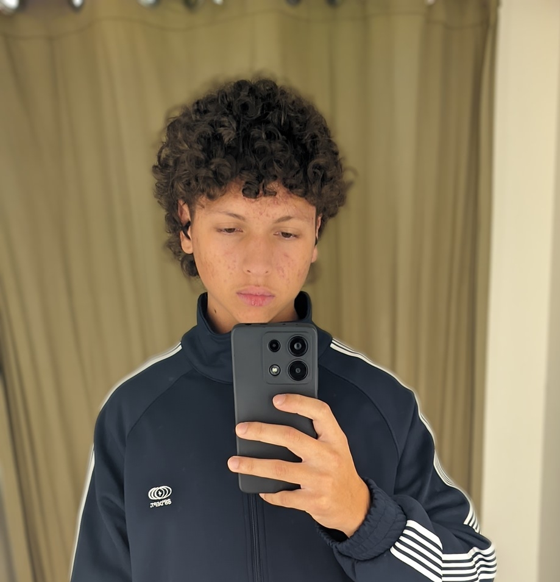

CicloZen
CicloZen
O CicloZen é um projeto criado por estudantes do ensino médio do instituto federal catarinense campus Araquari, com o objetivo de conscientizar sobre a importância de dormir bem. Nosso propósito é transformar informação científica em conhecimento acessível, ajudando cada pessoa a melhorar sua qualidade de vida através do sono.
Acreditamos que pequenas mudanças de hábitos podem gerar grandes transformações na hora de dormir e no nosso dia a dia por causa de um sono regulado ou não. Por isso, reunimos dicas práticas, hábitos, pesquisas recentes e estratégias simples para que qualquer pessoa, independentemente da rotina, possa ter noites mais tranquilas e melhores. Dormir bem é viver melhor. E dormir é so com CicloZen.
Rian Oliveira
Gustavo Bittencourt

Enzo Bernardes
Gamaliel Travesti
Wesley Madeira